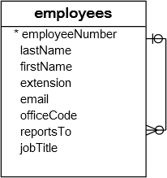

MySQL 外键约束(foreign key)
在本教程中，您将了解MySQL外键(foreign key)以及如何在MySQL中创建，添加和删除外键约束。
MySQL外键简介
外键表示一个表中的一个字段被另一个表中的一个字段引用。外键对相关表中的数据造成了限制，使MySQL能够保持参照完整性。
下面来看看示例数据库中的以下数据库中两个表：customers和`orders``的ER图。
上图中有两张表：customers和orders。每个客户有零个或多个订单，每个订单只属于一个客户。customers表和orders表之间的关系是一对多的，它是由customerNumber字段指定在orders表中建立外键(引用customers表的customerNumber字段)。orders表中的customerNumber字段与customers表中的customerNumber主键字段相关。
customers表称为父表或引用表，orders表称为子表或引用表。
表可以有多个外键，子表中的每个外键可能引用不同的父表。
子表中的行必须包含父表中存在的值，例如，orders表中的每个订单记录必须在customers表中存在customerNumber。 因此，多个订单可以指同一个客户，因此这种关系称为一个(客户)到许多(订单)或一对多。
有时，子表和父表是一样的。外键返回到表的主键，例如以下employees表：

reportTo列是一个引用employeeNumber列的外键，employeeNumber列是employees表的主键，以反映员工之间的报告结构，即每个员工向另一个员工发送的报告和员工可以有零个或多个直接报告。有关如何使用有，请参考自连接教程，以帮助您根据这种表查询来查询相关数据。
reportTo外键也称为递归或自引用外键。
外键执行引用完整性，可以帮助您自动维护数据的一致性和完整性。 例如，不能为不存在的客户创建订单。
此外，可以为customerNumber外键设置级联删除操作，以便在customers表中删除客户时，与客户关联的所有订单也将被删除。 这样可以节省您使用多个DELETE语句或JOIN语句的时间和精力。
与删除相同，还可以为customerNumber外键定义级联更新操作，以执行交叉表更新，而不使用多个UPDATE语句或UPDATE JOIN语句。
在MySQL中，InnoDB存储引擎支持外键，因此您必须创建InnoDB表才能使用外键约束。
创建外键
MySQL创建外键语法
以下语法说明了如何在CREATE TABLE语句中的子表中定义外键。
CONSTRAINT constraint_name
FOREIGN KEY foreign_key_name (columns)
REFERENCES parent_table(columns)
ON DELETE action
ON UPDATE action
下面我们来更详细的查看上面语法：
CONSTRAINT子句允许您为外键约束定义约束名称。如果省略它，MySQL将自动生成一个名称。FOREIGN KEY子句指定子表中引用父表中主键列的列。您可以在FOREIGN KEY子句后放置一个外键名称，或者让MySQL为您创建一个名称。 请注意，MySQL会自动创建一个具有foreign_key_name名称的索引。REFERENCES子句指定父表及其子表中列的引用。 在FOREIGN KEY和REFERENCES中指定的子表和父表中的列数必须相同。ON DELETE子句允许定义当父表中的记录被删除时，子表的记录怎样执行操作。如果省略ON DELETE子句并删除父表中的记录，则MySQL将拒绝删除子表中相关联的数据。此外，MySQL还提供了一些操作，以便您可以使用其他选项，例如ON DELETE CASCADE，当删除父表中的记录时，MySQL可以删除子表中引用父表中记录的记录。 如果您不希望删除子表中的相关记录，请改用ON DELETE SET NULL操作。当父表中的记录被删除时，MySQL会将子表中的外键列值设置为NULL，条件是子表中的外键列必须接受NULL值。 请注意，如果使用ON DELETE NO ACTION或ON DELETE RESTRICT操作，MySQL将拒绝删除。ON UPDATE子句允许指定在父表中的行更新时，子表中的行会怎样执行操作。当父表中的行被更新时，可以省略ON UPDATE子句让MySQL拒绝对子表中的行的任何更新。ON UPDATE CASCADE操作允许您执行交叉表更新，并且当更新父表中的行时，ON UPDATE SET NULL操作会将子表中行中的值重置为NULL值。ON UPDATE NO ACTION或UPDATE RESTRICT操作拒绝任何更新。
MySQL创建表外键示例
以下示例创建一个dbdemo数据库和两个表：categories和products。每个类别都有一个或多个产品，每个产品只属于一个类别。 products表中的cat_id字段被定义为具有UPDATE ON CASCADE和DELETE ON RESTRICT操作的外键。
CREATE DATABASE IF NOT EXISTS dbdemo;
USE dbdemo;
CREATE TABLE categories(
cat_id int not null auto_increment primary key,
cat_name varchar(255) not null,
cat_description text
) ENGINE=InnoDB;
CREATE TABLE products(
prd_id int not null auto_increment primary key,
prd_name varchar(355) not null,
prd_price decimal,
cat_id int not null,
FOREIGN KEY fk_cat(cat_id)
REFERENCES categories(cat_id)
ON UPDATE CASCADE
ON DELETE RESTRICT
)ENGINE=InnoDB;
添加外键
MySQL添加外键语法
要将外键添加到现有表中，请使用ALTER TABLE语句与上述外键定义语法：
ALTER table_name
ADD CONSTRAINT constraint_name
FOREIGN KEY foreign_key_name(columns)
REFERENCES parent_table(columns)
ON DELETE action
ON UPDATE action;
SQL
MySQL添加外键示例
现在，我们添加一个名为vendors的新表，并更改products表以包含供应商ID字段：
USE dbdemo;
CREATE TABLE vendors(
vdr_id int not null auto_increment primary key,
vdr_name varchar(255)
)ENGINE=InnoDB;
ALTER TABLE products
ADD COLUMN vdr_id int not null AFTER cat_id;
要在products表中添加外键，请使用以下语句：
ALTER TABLE products
ADD FOREIGN KEY fk_vendor(vdr_id)
REFERENCES vendors(vdr_id)
ON DELETE NO ACTION
ON UPDATE CASCADE;
现在，products表有两个外键，一个是引用categories表，另一个是引用vendors表。
删除MySQL外键
您还可以使用ALTER TABLE语句将外键删除，如下语句：
ALTER TABLE table_name
DROP FOREIGN KEY constraint_name;
在上面的声明中：
- 首先，指定要从中删除外键的表名称。
- 其次，将约束名称放在
DROP FOREIGN KEY子句之后。
请注意，
constraint_name是在创建或添加外键到表时指定的约束的名称。 如果省略它，MySQL会为您生成约束名称。
要获取生成的表的约束名称，请使用SHOW CREATE TABLE语句，如下所示：
SHOW CREATE TABLE table_name;
例如，要查看products表的外键，请使用以下语句：
SHOW CREATE TABLE products;
以下是语句的输出：
CREATE TABLE products (
prd_id int(11) NOT NULL AUTO_INCREMENT,
prd_name varchar(355) NOT NULL,
prd_price decimal(10,0) DEFAULT NULL,
cat_id int(11) NOT NULL,
vdr_id int(11) NOT NULL,
PRIMARY KEY (prd_id),
KEY fk_cat (cat_id),
KEY fk_vendor(vdr_id),
CONSTRAINT products_ibfk_2
FOREIGN KEY (vdr_id)
REFERENCES vendors (vdr_id)
ON DELETE NO ACTION
ON UPDATE CASCADE,
CONSTRAINT products_ibfk_1
FOREIGN KEY (cat_id)
REFERENCES categories (cat_id)
ON UPDATE CASCADE
) ENGINE=InnoDB;
products表有两个外键约束：products_ibfk_1和products_ibfk_2。
可以使用以下语句删除products表的外键：
ALTER TABLE products
DROP FOREIGN KEY products_ibfk_1;
ALTER TABLE products
DROP FOREIGN KEY products_ibfk_2;
MySQL禁用外键检查
有时，因为某种原因需要禁用外键检查(例如将CSV文件中的数据导入表中)非常有用。 如果不禁用外键检查，则必须以正确的顺序加载数据，即必须首先将数据加载到父表中，然后再将数据加载导入到子表中，这可能是乏味的。 但是，如果禁用外键检查，则可以按任何顺序加载导入数据。
除非禁用外键检查，否则不能删除由外键约束引用的表。删除表时，还会删除为表定义的任何约束。
要禁用外键检查，请使用以下语句：
SET foreign_key_checks = 0;
当然，可以使用以下语句启用它：
SET foreign_key_checks = 1;
在本教程中，我们已经介绍了很多有关MySQL外键的内容。还向您介绍了一些非常方便的语句，允许您在MySQL中有效地管理外键。